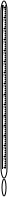
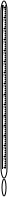
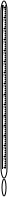
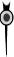
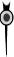

PENETRATION TEST ON BITUMEN
Objective:
To determine consistency of bitumen or the grade of the bitumen by penetration test.
Apparatus used:
Penetration Setup, Mould, Needle, Bunsen Burner, Water Bath.

Description Penetration Test: is the most commonly adopted test on bitumen to determine the grade of material in terms of its hardness because of its simplicity.
STEP
1

 



The bituminous material is heated to a pouring temperature and is poured to the mould.

STEP
2

Place the sample in position. Adjust the needle to touch the surface of the sample.

Needle is in position with sample.
STEP
3
Make the pointer of the dial to read zero. Release the needle for exactly five seconds.
| Trial No | Initial Reading(mm) | Final Reading(mm) | Penetration Value(mm) |
Move needle to initial position
STEP
4
Observation and Results.
| Trial No | Initial Reading(mm) | Final Reading(mm) | Penetration Value(mm) |
According to IRC, Bitumen grades 60/70 and 80/100 is suitable for bituminous macadam and penetration macadam. Hence this sample of bitumen is suitable for road construction.
Trial =

Both ends of the pipe must be trimmed to ensure parallel faces.
Both ends of the pipe must be trimmed to ensure parallel faces.

© 2018 - SOLVE - The Virtual Lab @ NITK Surathkal, Department of Water Resources & Ocean Engineering